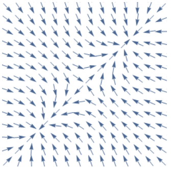
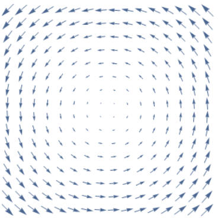

Advanced GANs
Neil Thistlethwaite
February 2018
Introduction
Introduction
In this lecture, we’ll go over some more specifics about how Generative Adversarial Networks (GANs) work, the problems they have that make them difficult to train, as well as more advanced architectures and training techniques for GANs.
Why GANs?
Instead of bothering with two networks, a discriminator and a generator, to produce realistic images, why don’t we just train a single network? If we just mapped the latent space (noise) to the images in our dataset,

Discrete Samples vs. a Probability Distribution
our network would just learn to memorize the outputs, and sampling the random noise wouldn’t give us anything we didn’t already have.
The main benefit of a GAN is that by pitting the generator and a discriminator against each other in a zero-sum game is that the generator learns to actually recreate the underlying probability distribution of the data.
If the GAN can actually learn to recreate the probability distribution, then we can sample it arbitrarily and get images that lie on the manifold of our data that weren’t originally in our dataset. A manifold refers to a “curve” of N-dimensional space; for instance, a surface in 3D space would be a 2 dimensional manifold, also called a 2-manifold. In the context of image producing GANs, the dimension of the space we’re working in is usually very high, although typically a specific dataset of images will lie on a much lower dimensional manifold of said space.
GAN Review
Generative Adversarial Networks work by defining and training two networks, a generator \(G\), and a discriminator \(D\). The generator maps a latent space \(z\), usually an \(n\times1\) vector of normal noise, to an image of whatever size we choose. The discriminator takes in images of said size and produces a value from 0 to 1, indicating the probability that the input image was ‘real’. During training, we simultaneously update \(D\) and \(G\) like so:
Train the Discriminator:
Sample the latent space, \(z\)
Find \(X_{fake} = G(z)\)
Train \(D(X)\) with \(X_{fake}\xrightarrow{}0,\; X_{real}\xrightarrow{}1\)
Train the Generator:
Sample the latent space, \(z\)
Train \(D(G(z))\xrightarrow{}1\), with the weights of \(D\) frozen
Game Theory
Another way of looking at GANs is from the game theory perspective; we have two players in a non-cooperative, zero-sum game, where each is trying to minimize their loss, and, as a consequence, maximize its opponent’s. From this perspective, the goal is to achieve a Nash Equilibrium, a state where both players have optimal performance, and neither can get an “edge” on the other by changing their strategy. Unfortunately, with the base formulation of GANs, using a variant of gradient descent for training, we have no guarantee of ever reaching a Nash Equilibrium, or that one even exists because of how we define the problem.
Loss Function
The loss function associated with a traditional GAN is relatively simple; it’s simply log loss, also known as binary cross-entropy, the standard loss for a binary classifier. The generator does not have a separate loss, because its gradients come from trying to produce an output that yields \(1\) from the discriminator, they are just backpropagated through the discriminator.
The original GAN paper (Goodfellow et al. 2014) gave a number of insights into how this loss works, including the fact that under certain ideal conditions1, this log loss approximates the Jensen–Shannon Divergence2, between the generator’s distribution \(p_g\) and the real data distribution \(p_r\). In practice, the losses in a GAN don’t actually model how realistic the images are (i.e., how closely it approximates the real distribution), partly because the loss function for the generator is often swapped from \(log(1-s)\) to \(-log(s)\) to increase the magnitude of gradients.
Two issues immediately arise: instability in training the GAN, and not knowing when it has converged, or if it ever will. The instability comes in part from the fact that by training both the generator and discriminator simultaneously, or near simultaneously, we could get stuck in a sort of ‘loop’, where rather than reach an equilibrium, the generator and discriminator end up ‘circling’ it. Additionally, the zero-sum game is not necessarily well defined, in the sense of there being any number of local optima that training could get stuck in, or around.
These issues are addressed, with varying levels of success, with Wasserstein GANs (2017) and Consensus Optimization (2017).
Wasserstein GANs
Wasserstein GANs, also known as WGANs and WassGANs, attempt to fix some of the problems with traditional GANs by using a different loss function, based on the Wasserstein Distance, and clamping the weights on the critic (essentially just the discriminator from before, but they view it more as a “helper” for the purposes of a WGAN, hence the name change) to a small fixed range \([-c, c]\). In the WGAN paper (Arjovsky, Chintala, & Bottou, 2017), they also recommend using a simpler optimizer, such as RMSProp, rather than a momentum based one, although this is mostly based on empirical evidence.
Essentially, the claim is that Wasserstein GANs work better because the Wasserstein Distance provides a smoother metric for the distance between the generator’s probability distribution and the real data’s probability distribution, specifically when the manifolds of each lie in lower dimensions and are non-overlapping. It also means that the loss function now more directly represents how close the generator is to producing realistic images.
Of course, many of the problems from GANs are still present in WGANs, such as training instability and slow convergence, and they are still the subject of ongoing machine learning research. The weight clipping in particular, which is only part of the algorithm to satisfy a constraint necessary for Wasserstein Distance, is “terrible” in the words of the original authors.
Consensus Optimization
In The Numerics of GANs (2017), Mescheder, Nowozin, and Geiger proposed an algorithm for training GANs that they call Consensus Optimization. Consensus Optimization is a rather interesting ‘fix’ for GANs in the sense that, unlike WGANs, it doesn’t change the formulation of the problem itself, it changes the optimization method and how we go about locating a Nash equilibrium during training. To understand how it works, we will first appeal to vector fields, and the gradient operator3.
Consider a simple learning model, such as a basic neural network trained to XOR two inputs, with log loss (binary crossentropy). The loss (or cost) function can be expressed as a scalar function, \(J(X,\theta)\), and if we assume \(X\) is constant, we have \(J(\theta)\), a scalar function of our model’s parameters. The goal is to minimize this loss function, and find the global minimum of \(J(\theta)\). Gradient descent works by updating the parameters in the direction of greatest decrease of the loss function, also known as the gradient of the function. The gradient operator naturally gives us a vector in \(\mathbb{R}^n\), where n is \(dim(\theta)\), since it is a direction.
\(\theta'=\theta-\alpha*\nabla{J(\theta)}\)
 
In our simple model, the vector field representing \(\nabla{J(\theta)}\) is a conservative vector field, which means that all line integrals are path-independent. In layman’s terms, this just means that “nothing too crazy happens”. We can have saddle points and local optimas, which will cause simpler optimizers to get stuck, but we will necessarily always converge somewhere.
However, with simultaneous gradient ascent for a GAN, where we have two networks and the loss function is interdependent on both networks’ parameters. Essentially, this just means that the corresponding vector field is non-conservative: we can’t find a potential function, such as the universal cost function \(J(\theta)\) from earlier. This leads to a number of interesting properties, but also causes a number of problems. We lose, for instance, the guarantee that we will always converge.
Consider, for instance, the constant curl vector field. It can be mathematically shown that this field and fields similar to it arise naturally in two player non-cooperative games, but I will omit the dense mathematical details here. By inspection, you cannot draw a loss function whose gradient produces this vector field, because you would need to be able to decrease indefinitely by traveling in a circle. However, it does have a Nash equilibrium. At the center of the ‘vortex’, it is stable. But with regular simultaneous gradient ascent, we are never able to reach this equilibrium, and are stuck circling it indefinitely, without ever getting closer.
What Consensus Optimization does to fix this is it computes a conservative vector field from the non-conservative one, by taking the gradient of a norm of the vector field. Because we define it as a gradient, it is necessarily conservative, and, because of how we defined its potential, it will have the same fix points as our original non-conservative vector field. However, this essentially transforms all fix points into optima, including saddle points, which are clearly undesirable to converge at.
Our solution to this is to define a new, ‘conservative-ish’ vector field as a weighted average of the original non-conservative and computed conservative vector field. Determining the parameters for this weighted average is still a topic of discussion, but right now, they are mostly optimized in the same ways as other model hyperparameters.
Conclusion
Hopefully this lecture gave you some insight into some of the recent advancements in GANs, as well as gave you a picture of how fast research in machine learning is happening. Despite all these changes, GANs and their variants remain hard to train, and suffer from other problems, but interest in producing “realistic” images and other applications of these models are driving further research.
Resources
The original GAN paper (Goodfellow et al. 2014), as it is called, is surprisingly easy to understand, minus the statistics and theoretical results they present, and is a good starting point for understanding how GANs work.
Ferenc Huszár, a machine learning researcher at Twitter, runs a blog at http://www.inference.vc, where he explains various concepts in easier-to-understand terms, including a number of posts about GANs.
His post on The Numerics of GANs was especially useful in writing Consensus Optimization
(http://www.inference.vc/my-notes-on-the-numerics-of-gans/)
Lilian Weng also has a nice explanation of Wasserstein GANs at https://lilianweng.github.io/lil-log/2017/08/20/from-GAN-to-WGAN, if you want a more in-depth explanation.
You can read the paper for details, but essentially it has to do with an “ideal” method of training, where we train the discriminator to convergence before alternating, which doesn’t work well in practice.↩
JS–Divergence is one way of evaluating the difference between two probability distributions.↩
This explanation necessarily requires some knowledge of multivariable calculus; I will try to explain everything in simple terms, but in the interest of time I will leave some common results unproved.↩